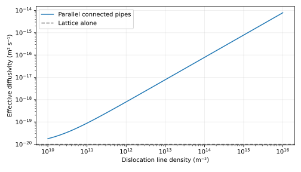

IIT Hyderabad · NPTEL · Independent study edition
Dislocation pipe diffusion and pathway competition
A specimen can contain very little dislocation-core material and still transport most of a tracer through it. That possibility follows from conductance, but only if the cores connect the source to the destination and exchange solute with the lattice. A small geometric fraction is therefore neither evidence for irrelevance nor proof of dominance.
Source spine: L44 develops cylindrical pipe diffusion and its kinetic regimes; L45 supplies pathway, regime, and probe tutorials. The geometric balances, synthetic conductance comparison, and exchange calculation are developed here. The nuclear-probe questions connect to Chapters18–19 rather than establish new universal linewidth laws.
21.1 From a dislocation line to a transport fraction L44 00:18
A dislocation is a line defect characterized by a Burgers vector, the closure failure of a lattice circuit around the line. Its core is the region where a smooth elastic description no longer adequately represents the local atomic arrangement. Core structure and stress can change the formation and migration of atomic defects. A pipe model represents this region as a cylinder of radius \(a\) with axial diffusivity \(D_p\), embedded in a lattice of scalar diffusivity \(D\). Both coefficients have units m²s⁻¹; \(a\) is in meters.
Dislocation density \(\rho_d\) is total line length divided by specimen volume, with units m⁻². For straight, parallel, nonoverlapping pipes spanning the specimen, multiply length density by the circular core area to obtain
\[\phi_p=\pi a^2\rho_d,\qquad L_d\sim\rho_d^{-1/2}.\tag{21.1}\]The first quantity is a volume fraction; \(L_d\) is an approximate spacing. The spacing estimate suppresses arrangement-dependent numerical factors. The fraction formula assumes distinct cylindrical cores and loses meaning as overlap becomes significant. For curved or tangled dislocations, line density alone does not specify axial connectivity or orientation. A disconnected loop can provide local redistribution without carrying a through-thickness flux.
We use dilute tracer concentration \(c_p\) in the pipe and \(c\) in the lattice, both in mol m⁻³, with fluxes measured in the stationary lattice frame. Unless explicitly stated, there is no segregation at the interface. An effective core radius such as a fraction of a nanometer is a modeling convention; it should not be silently treated as a universal material constant. Since the inferred fraction scales as its square, radius uncertainty has direct consequences for inferred pipe diffusivity.
21.2 Cylindrical leakage follows geometry L44 04:36
Take \(z\) along a straight pipe and \(r\geq a\) as radial distance from its axis. Assume rotational symmetry, constant coefficients, and no reaction. A cylindrical shell has volume proportional to \(r\,dr\), while its radial face area is proportional to \(r\). Conservation therefore gives the axisymmetric lattice equation
\[\partial_tc=D\left[\frac1r\partial_r(r\partial_rc)+\partial_z^2c\right].\tag{21.2}\]The radial term contains both \(\partial_r^2c\) and \(r^{-1}\partial_rc\). Replacing it by a Cartesian second derivative discards the changing area through which the flux passes. A cylindrical model must keep that geometry even when the atomic core itself is represented only by an effective radius.
Assume the core equilibrates across its radius sufficiently rapidly that \(c_p(z,t)\) is uniform over its cross section. Let \(j_r=-D\partial_rc|_{a+}\) be outward molar flux from core to lattice. A segment of length \(dz\) stores \(\pi a^2c_pdz\), conducts through its two circular ends, and loses \(2\pi a j_rdz\) through its circumference. Division by its volume yields
\[\partial_tc_p=D_p\partial_z^2c_p-\frac{2}{a}j_r.\tag{21.3}\]The exchange coefficient \(2/a\) is circumference divided by area. It has units m⁻¹, so multiplication by flux gives mol m⁻³s⁻¹. For an enriched core, concentration decreases outward and \(j_r>0\); leakage lowers its stored concentration. The lattice receives the same amount. With no interfacial segregation, \(c(a,z,t)=c_p(z,t)\). A partition factor would change this boundary relation and the relative storage, just as for grain boundaries.
A useful reduced exchange model ignores spatial gradients temporarily and tracks two well-mixed regions. Let \(\lambda>0\), in s⁻¹, be the rate at which their concentration difference relaxes. Set \(\dot c_p=-(1-\phi_p)\lambda(c_p-c_l)\) and \(\dot c_l=\phi_p\lambda(c_p-c_l)\), where \(c_l\) is lattice concentration. Multiplying by the volume fractions proves conservation. Subtraction gives \(d(c_p-c_l)/dt=-\lambda(c_p-c_l)\), so the difference decays exponentially. This original construction separates a local exchange time from an axial diffusion time; it is not the exact cylindrical leakage kernel.
21.3 Dominance requires geometry and exchange L44 18:20
For aligned connected pipes, rapid exchange, equal local concentration, and a shared axial gradient, add fluxes per total area. The result is \(\bar J_z=-[(1-\phi_p)D+\phi_pD_p]\partial_zc\). With constant volume fractions, the effective coefficient is
\[D_{\parallel}=(1-\phi_p)D+\phi_pD_p.\tag{21.4}\]The relative pipe contribution is \(\phi_pD_p/[(1-\phi_p)D]\). Thus the small parameter is not the fraction alone: it is the fraction multiplied by the diffusivity contrast. This derivation is a parallel-conductance result. It does not apply unchanged to a network that exchanges slowly, terminates within the specimen, or is oriented perpendicular to the imposed gradient.
For comparison, arrange two materials in series with length fractions \(1-\phi_p\) and \(\phi_p\). Steady conservation requires a common flux, while their concentration drops add. Dividing total length times flux by total drop gives
\[D_{\mathrm{series}}=\left[(1-\phi_p)/D+\phi_p/D_p\right]^{-1}.\tag{21.5}\]The same constituent coefficients and fractions can therefore have radically different effective transport. This series construction is a counterexample to inference from fraction alone; it is not a realistic drawing of one straight pipe. A dislocation network requires an orientation distribution and connectivity model before either idealization becomes appropriate.
The synthetic laboratory takes \(a=5\times10^{-10}\)m, \(\rho_d=10^{14}\)m⁻², \(D=10^{-20}\)m²s⁻¹, and \(D_p=10^{-12}\)m²s⁻¹. It computes \(\phi_p=7.85398\times10^{-5}\) and spacing approximately \(10^{-7}\)m. Equation(21.4) gives \(7.85498\times10^{-17}\)m²s⁻¹, whereas the series construction gives \(1.00008\times10^{-20}\)m²s⁻¹. The connected pipe contribution exceeds the lattice contribution by approximately7854.60 even though the pipe fraction is tiny.

21.4 Profiles distinguish regimes only under a model L44 21:30
Compare the lattice penetration length \(\sqrt{Dt}\) with pipe spacing and radius. Overlapping leakage fields favor an A-regime effective-medium description. Isolated leakage fields permit a B-regime pipe tail. Negligible leakage permits C-regime transport along the core. These are scale classifications, not fixed temperature labels. The relevant time changes with the anneal, and dislocation recovery can change spacing while diffusion proceeds.
Within the appropriate isolated-path asymptotics, a pipe-induced B tail is approximately exponential in depth, so \(\ln\bar c\) is approximately linear in \(z\). The boundary B tail instead uses \(z^{6/5}\). In C conditions, an instantaneous core source yields the one-dimensional Gaussian exponent \(-z^2/(4D_pt)\). These distinct transforms provide diagnostics, but fitting one exponent over a narrow signal range is not proof of a pathway. Instrumental averaging, background subtraction, mixed pathways, and evolving structure can imitate a local slope.
Serial sectioning measures the cross-sectional mean, not the concentration in one core. For an instantaneous initial tracer layer, write the complete mean as a lattice-only reference plus a pipe-induced perturbation. The perturbation can be negative near the source: fast paths remove tracer there and place it deeper. It is the sum that must remain nonnegative. A negative difference between two positive profiles is consistent with conservation. A maintained concentration source need not have the same redistribution signature, because it supplies additional tracer over time.
A defensible discrimination experiment varies both time and microstructure. Measure the lattice coefficient independently, characterize line density and boundary density, and maintain comparable source preparation. Then compare profile changes across anneals with predictions for each candidate geometry. An independent spatial map locating enrichment at lines or planes provides stronger pathway evidence than a fitted exponent alone. The exact Bessel-function kernel for isolated cylindrical leakage is not reconstructed from caption fragments here; the governing balances define what a fuller model would have to solve.
21.5 Tutorial calculations and reproducibility L45 08:36
The source tutorial supplies an Arrhenius lattice coefficient with prefactor \(D_0=1.2\times10^{-4}\)m²s⁻¹, molar activation enthalpy \(Q=303000\)Jmol⁻¹, temperature673K, and anneal time two weeks. Using \(D=D_0e^{-Q/(RT)}\) gives \(D=3.65099\times10^{-28}\)m²s⁻¹. The time is1209600s and the lattice length is \(2.10148\times10^{-11}\)m. With the separate boundary convention \(s_b=1,\delta=0.5\)nm, the parameter \(\alpha=\delta/(2\sqrt{Dt})\) equals11.8964. This fails the B-condition small-alpha test and supports negligible lattice leakage for that boundary model. It is not a universal pipe-regime threshold.
The tutorial also connects the transport problem to scattering. For equal incident wavelengths and elastic scattering, wavevector magnitude is \(q=(4\pi/\lambda_n)\sin(\theta/2)\), where \(\lambda_n\) is neutron wavelength and \(\theta\) the full scattering angle. Angles \(\pi/6\) and \(\pi/4\) therefore give ratio \(\sin(\pi/12)/\sin(\pi/8)=0.676327\). The sine uses half the scattering angle. Converting this geometric quantity into a diffusivity requires the dynamic scattering model and linewidth convention developed in Chapter19.
The executable ch21.py writes these quantities, the parallel/series comparison, and a closed two-compartment exchange check to the saved output. In the exchange check the conserved mean differs from its initial value by at most \(1.12\times10^{-16}\). Inputs are fixed; no random sampling or empirical fitting is hidden in the figure. Source polynomial and Arrhenius-table values whose exact slide coefficients have not been verified are not reproduced. Unit checks remain mandatory:0.1µm is100nm, and a natural-log intercept of−41 implies a prefactor \(e^{-41}=1.56288\times10^{-18}\) in the stated reference units.
21.6 Exercises and worked solutions
Radius sensitivity. The line density rises100-fold and core diameter rises by a factor \(\sqrt2\). How does the pipe term change?
Solution
Radius changes by the same factor as diameter. Therefore \(a^2\rho_d\) changes by \(2\times100=200\). At fixed \(D_p\), the term \(\phi_pD_p\) rises200-fold. The total effective coefficient does not generally rise by exactly200 because the lattice contribution remains and the fraction affects it as well. Changes in connectivity or core chemistry would invalidate the fixed-parameter scaling.
Leakage geometry. Derive the coefficient in front of outward flux in the thin-pipe balance.
Solution
For length \(dz\), divide lateral loss \(2\pi a j_rdz\) by volume \(\pi a^2dz\). The result is \(2j_r/a\). A planar boundary has two faces per width and therefore a different geometry factor. Equal apparent thickness does not make the two leakage problems identical.
Exchange solution. Solve the well-mixed model for conserved mean \(c_0\) and initial difference \(\Delta_0\).
Solution
The difference is \(\Delta=\Delta_0e^{-\lambda t}\). Conservation gives \(\phi_pc_p+(1-\phi_p)c_l=c_0\). Solving the two linear equations yields \(c_p=c_0+(1-\phi_p)\Delta\) and \(c_l=c_0-\phi_p\Delta\). Nonnegative initial values remain nonnegative because both approach their positive weighted mean monotonically.
Connectivity counterexample. Explain why identical line densities need not give identical through-thickness fluxes.
Solution
One specimen may contain straight lines bridging the two surfaces, another closed loops. Both can have the same line length per volume. The first offers an uninterrupted axial route; the second requires lattice exchange between loops. Equation(21.4) assumes the former geometry. Line density constrains the amount of core material, not the complete transport network.
Negative perturbation. Does a pipe correction below zero near the initial source violate positivity?
Solution
No. Define the correction as \(\Delta c=\bar c_{\mathrm{pipe}}-\bar c_{\mathrm{lattice}}\). It is negative wherever the pipe-bearing specimen has been depleted more strongly. Each complete concentration can remain positive. In a closed pulse experiment their integrated amounts agree, so negative and positive parts of the difference compensate. Checking the correction's sign alone tests the wrong physical quantity.
Discriminating a tail. Two linear fits work equally well for \(\ln\bar c\) against \(z\) and \(z^{6/5}\) over a narrow interval. Design a useful next measurement.
Solution
Extend the measurable depth and concentration range, repeat at a different time, and independently characterize boundary and line densities. Jointly test the time-dependent profiles against pipe and boundary models with the same source and response function. A spatially resolved enrichment map is particularly valuable because it tests path geometry directly. More significant figures in the original short-range fit cannot resolve structural nonidentifiability.
A fast-path model becomes useful when its geometry, exchange law, and measured averaging operation are all specified. The coefficient obtained after those choices is evidence about that model, with a stated domain of validity.
Python laboratory
Run code/ch21.py. Inputs and scientific limits are specified in the chapter and program.
Complete runnable source
"""Synthetic pipe-path and leakage checks; SI units unless stated."""
from pathlib import Path
import json
import numpy as np
import matplotlib
import matplotlib.pyplot as plt
matplotlib.use("Agg")
matplotlib.rcParams["svg.hashsalt"] = "ch21"
ROOT = Path(__file__).resolve().parents[1]
def main():
a, rho, D, Dp = 5e-10, 1e14, 1e-20, 1e-12
phi = np.pi * a * a * rho
parallel = (1 - phi) * D + phi * Dp
series = 1 / ((1 - phi) / D + phi / Dp)
rho_grid = np.logspace(10, 16, 200)
fraction = np.pi * a * a * rho_grid
eff = (1 - fraction) * D + fraction * Dp
R = 8.31446261815324
Dl = 1.2e-4 * np.exp(-303000 / (R * 673))
length = np.sqrt(Dl * (14 * 24 * 3600))
# Two-compartment exchange: capacities phi and 1-phi.
k = 0.2
tau = np.linspace(0, 5, 101)
cp = 1 + (1 - phi) * np.exp(-k * tau)
cl = 1 - phi * np.exp(-k * tau)
mass = phi * cp + (1 - phi) * cl
assert np.max(np.abs(mass - 1)) < 1e-14
out = {
"status": "synthetic; lecture tutorial inputs recomputed separately",
"pipe_fraction": float(phi),
"spacing_m": float(rho**-0.5),
"parallel_m2_s": float(parallel),
"series_m2_s": float(series),
"pipe_to_lattice_contribution": float(phi * Dp / ((1 - phi) * D)),
"density_diameter_multiplier": 200.0,
"tutorial": {
"D_673K_m2_s": float(Dl),
"sqrt_Dt_m": float(length),
"alpha_delta_half_nm": float(5e-10 / (2 * length)),
"q_ratio": float(np.sin(np.pi / 12) / np.sin(np.pi / 8)),
"exp_minus_41_m3_s": float(np.exp(-41)),
},
"exchange_mass_max_error": float(np.max(np.abs(mass - 1))),
}
fig, ax = plt.subplots(figsize=(7, 4))
ax.loglog(rho_grid, eff, label="Parallel connected pipes")
ax.axhline(D, color="gray", linestyle="--", label="Lattice alone")
ax.set(
xlabel="Dislocation line density (m⁻²)",
ylabel="Effective diffusivity (m² s⁻¹)",
)
ax.grid(alpha=0.25)
ax.legend()
fig.tight_layout()
fig.savefig(ROOT / "assets/ch21-pathways.svg", metadata={"Date": None})
plt.close(fig)
(ROOT / "code/ch21-output.json").write_text(
json.dumps(out, indent=2) + "\n"
)
print(json.dumps(out, indent=2))
if __name__ == "__main__":
main()
Recorded execution output
{
"status": "synthetic; lecture tutorial inputs recomputed separately",
"pipe_fraction": 7.853981633974484e-05,
"spacing_m": 1e-07,
"parallel_m2_s": 7.854981555434667e-17,
"series_m2_s": 1.0000785459845414e-20,
"pipe_to_lattice_contribution": 7854.598532700665,
"density_diameter_multiplier": 200.0,
"tutorial": {
"D_673K_m2_s": 3.65098649033168e-28,
"sqrt_Dt_m": 2.1014835851619686e-11,
"alpha_delta_half_nm": 11.896357495494387,
"q_ratio": 0.6763267578712442,
"exp_minus_41_m3_s": 1.5628821893349888e-18
},
"exchange_mass_max_error": 1.1102230246251565e-16
}